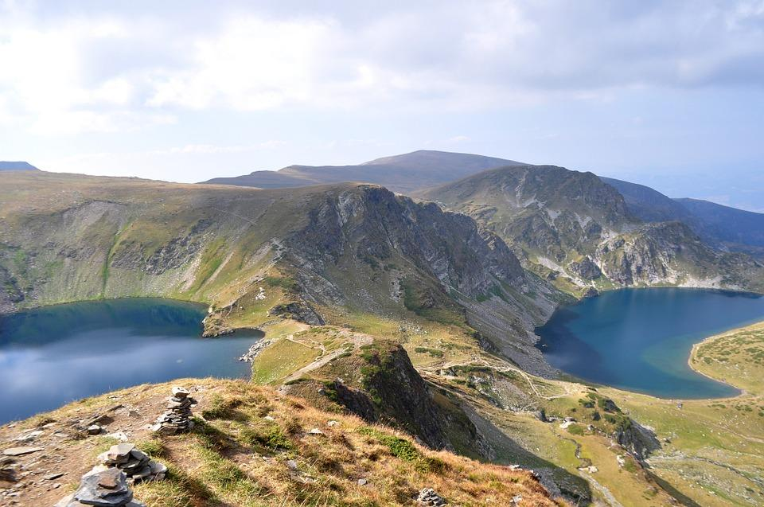

Националният парк „Рила” е разположен в югозападната част на страната, в Рила планина. Паркът има обща площ от 81 046,0 ха и е най-големият от трите национални парка в България и един от най-големите в Европа. Обявен е на 24 февруари 1992 г.
Управлението на парка цели да опазва и поддържа биологичното разнообразие и защитава дивата природа, да предоставя възможности за научни и образователни дейности, за развитието на туризъм и за екологосъобразен поминък на населението. Дирекцията на Националния парк включва Централен офис и осем местни офиса, управляващи съответните административни паркови участъци: Благоевград, Белица, Якоруда, Белово, Костенец, Боровец, Бели Искър, Говедарци и Дупница.
На територията на парка има над 100 върха с надморска височина над 2000 м, като сред тях се издига най-високият връх в страната и на Балканския полуостров – Мусала (2925 м). Най-ниската измерена температура на Мусала е -31,2°С, а най-високата температура е + 18,7°С. Температурата остава отрицателна през девет от годишните месеци, въпреки че дори през летните месеци температурата рядко надвишава 15°С.
Във високопланинските части на Рила има над 120 постоянни и 30 временни ледникови езера, разположени главно в дълбоките дъна на циркусите. Оттук извират едни от най-пълноводните и дълги реки на Балканския полуостров – Искър, Марица и Места.
Водните запаси, които се формират в границите на Национален парк „Рила”, са най-важният ресурс на чиста питейна вода за околните общини, за столицата София и за част от населението в Гърция и Турция.
Според допитване до посетителите в националния парк, публикувано във връзка с изготвянето на проектоплана, туристите ценят най-вече природата и нейната красота (36,4%), следвана от възможността за усамотяване, липсата на хора и спокойствието (16,3%) и чистотата на въздуха (14,2%).
В същото време, най-лошо впечатление прави на посетителите замърсяването, причинено от туристи (20,9%), условията в някои хижи и поведението на хижарите (19,4%), както и струпването на много хора на определени места, пренаселеността и шумните компании (12,4).